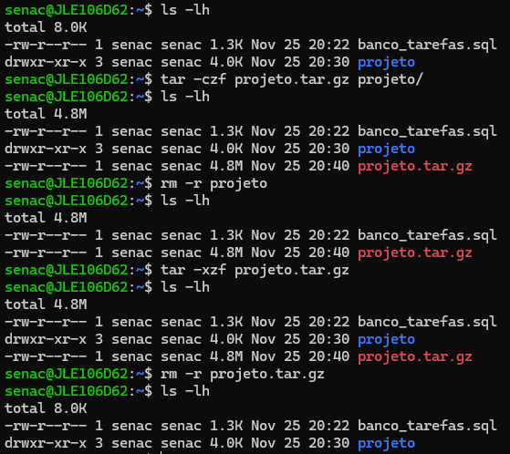
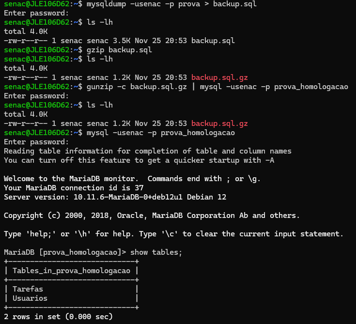

1. O que é uma publicação web, quais os dois tipos de aplicações existentes e suas principais diferenças.
Publicar para WEB consiste em hospedar uma aplicação na WEB própriamente dita. Existem tanto publicações de páginas estáticas que seriam página apenas com o lado do cliente(FrontEnd), já as páginas dinâmicas, seriam páginas que contém o lado do servidor(BackEnd).
2. O que é um domínio e um DNS.
As páginas WEB por padrão possuem endereços IP(internet protocol) que consiste em uma sequência de números seguidos de ".". Para que as pessoas não tenham a necessidade de memorizar esses números, existe os domínios de DNS, que nada mais é do que atribuir um nome mais simples de se memorizar para esse IP, como por exemplo "youtube.com".
3. Explique o que é um servidor compartilhado e um servidor dedicado, evidenciando suas vantagens e desvantagens.
Compartilhado
Quando pagamos pela hospedagem de um servidor, estamos alugando um espaço físico com computadores para armazenar e computar os dados e códigos do nosso site. Na hospedagem compartilhada um mesmo lugar físico, ou seja, um mesmo servidor irá prover esse poder computacional para múltiplos sites.Vantagens
- Acessibilidade: Como o custo é dividido entre vários usuários, o custo do servidor acaba sendo menor
- Gerenciamento fácil: O provedor de servidores comparilhado normalmente disponibilizam um painel de controle para fazer o gerenciamento do seu site de forma mais fácil.
- Manutenção simples: O provedor do servidor acaba cuidado de todo o suporte técnico do mesmo, como instalção dos software e atualizações do mesmo.
- Flexibilidade: A maioria dos provedores de servidores compartilhado disponibilizam planos escolonáveis de acord com a medida que o seu site cresce.
Desvantagens
- Recursos Limitados: Tanto o armazenamento, largura de banda e poder de processamento será limitado devido concentrar-se a múltiplos sites. Um pico de tráfego em outro site pode acabar afetando negativamente usuários do seu site.
- Sem acesso ao root: Sendo o nível de acesso mais alto do servidor, o mesmo por ser compartilhado não possível obter, normalmente só se tem em servidores dedicados.
- IP compartilhado: Por ser um endereço de IP compartilhado, não se pode acessar seu WebSite através do mesmo caso tenha problemas com seu domínio de DNS.
Dedicado
Consiste nada mais nada mesmo do que possuir um servidor inteiro dedicado ao seu site, o que te da um controle total do servidor, sendo responsável pela instalação e atualização do softwares necessários. Por ser um servidor totalmente dedicado a um site, acaba se tornando mais caro, porém não há problemas com questão a recursos ou tráfegos de outros sites.4. O que é um servidor web, explique os dois principais servidores. Como fazer o backup de um projeto de forma compactada. Bem como restaurá-la. Utilize imagens para Ilustrar.
Um Web Server é responsável por armazenar, processar e entregar dados do servidor para os navegadores.
5. O que é um servidor de banco de dados, explique como fazer o backup e restaurar esse backup. Utilize imagens para ilustrar. (Para facilitar utilize o arquivo em anexo)
É um local físico utilizado para armazenar e gerenciar dados de forma estruturada.
6. O que é um serviço ssh, e como ele permite acessar um servidor web para transferir arquivos de uma máquina local e o servidor.
O protocolo Secure Shell(SSH), é um método para enviar dados com segurança em uma rede não segura, autenticando e criptografando conexões entre dispositivos.
7. Explique o que é um Linux e cite as principais distribuições usadas como servidor web.
O Linux é um kernel de código aberto permitindo que várias distribuições de sistema operacional. Sendo muito utilizado para servidores devido ao seu desempenho e custo, dentre elas as distribuições mais usadas:
- Ubuntu Server
- Red Hat Enterprise Linux
- OpenSUSE Leap
- Debian
8. Explique alguns comando básicos do Linux.
- touch nome_do_arquivo -- para criar um arquivo.
- mkdir nome_da_pasta -- para criar uma pasta.
- cd nome_da_pasta -- para navegar entre as pastas.
- cd ../ -- para voltar.
- mv nome_do_arquivo -- move e renomeia um arquivo.
- rm nome_do_arquivo -- remove um arquivo único
- rm -r -- remove uma pasta e tudo que tem dentro dela.
- sudo apt update -- Verifica se existe atualizações no repo do linux utilizado.
- sudo apt upgrade -- Faz as atualizações encontradas.
- sudo adduser nmDoUsuario -- Adiciona um novo usuário.
- sudo login nmDoUsuario -- Loga no usuário desejado.
- useradd --help -- Caso não lembre como adicionar um novo usuário ( --help pode ser utilizados em outros comando para verificar como utiliza-los ).
- sudo usermod -a -G grupos nmDoUsuario.
- sudo apt install htop -- Instala a ferramenta htop para monitorar os recursos utilizados no servidor.
- sudo apt install nomeDoPrograma -- Instala o programa desejado.